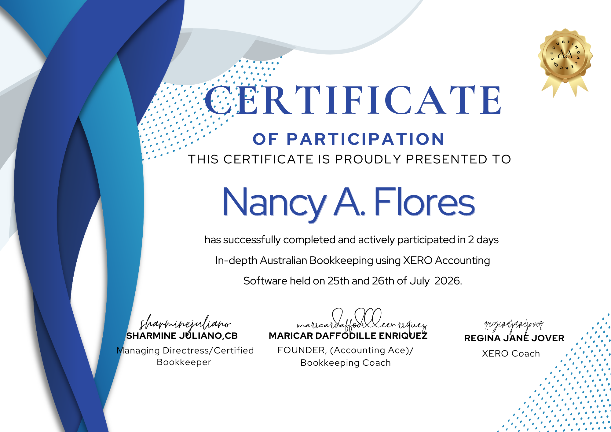
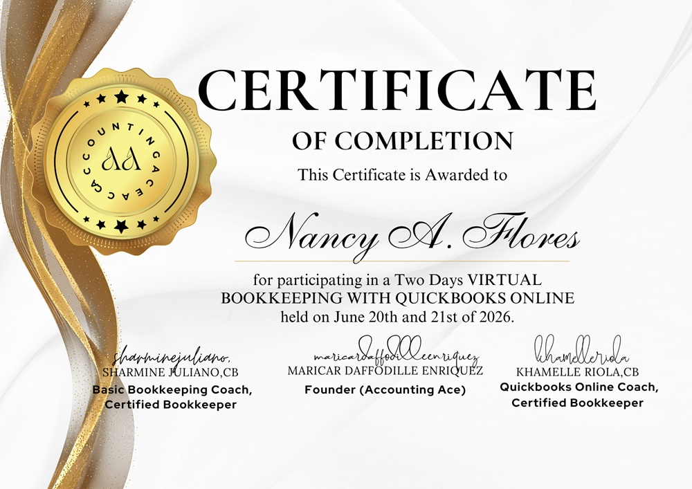
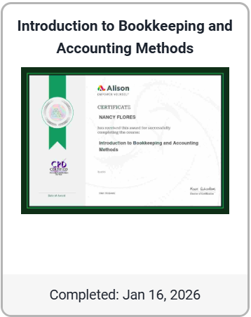
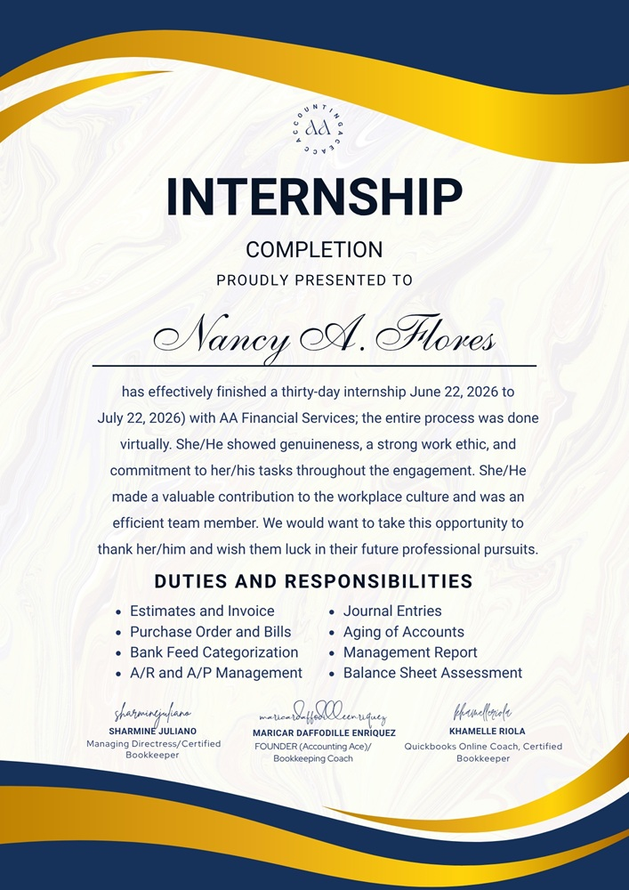

Xero & QuickBooks Bookkeeping
Transaction CategorizationRecord and categorize transactions accurately so your books stay organized.
Case studyReady to offerI handle day-to-day bookkeeping, reconciliations and payroll support, so you can stop wrestling with spreadsheets and focus on growing your business.
View My WorkLet's Work TogetherXero · QuickBooks Online · Xero Payroll · GST/BAS · UK VAT · Excel & Google Sheets

Messy books, skipped reconciliations and looming BAS or VAT deadlines cost business owners time and peace of mind. I keep your financial records accurate, organized and up to date.
I'm a Bookkeeping Virtual Assistant certified in QuickBooks Online, Xero and Xero Payroll, with practical experience across U.S., UK and Australian bookkeeping workflows. With a 30-year background in administration, financial record-keeping, documentation and training, I bring a structured, reliable approach to remote work for small and medium-sized businesses.
Selected experience & results
These results come from internships and practice projects, not paid client engagements.
Also available for administrative support: data management, records management, process documentation, and email and calendar support.
Open to remote Bookkeeping VA, Payroll Support and Administrative Support opportunities.
Let's Work TogetherCase study = shown in a case study below Ready to offer = a service I am ready to take on
Record and categorize transactions accurately so your books stay organized.
Case studyReady to offerMatch bank and card statements to your books and resolve discrepancies.
Case studyReady to offerCorrect duplicates and misclassified entries, and restore accuracy to outdated records.
Case studyReady to offerTrack customer invoices and vendor bills, due dates and outstanding balances.
Case studyReady to offerReconcile with correct GST codes and prepare draft Activity Statements.
Case studyReady to offerSet up and process pay runs, including PAYG withholding and superannuation.
Case studyReady to offerApply the correct VAT treatment to transactions, reconciliation and reporting.
Case studyReady to offerPrepare reliable reports that support informed business decisions.
Case studyReady to offerMove manual Excel books into Xero through conversion balances, then continue bookkeeping and reporting.
Case studyReady to offerPlease note: these six projects are training or practicum work completed on practice companies with simulated data, as part of Accounting Ace Xero training and Hey! It's Kajea's 30-Day Bookkeeping Challenge. They are not paid client work.

Context
A practice company needed its bank reconciled, coding errors corrected and a draft Activity Statement (BAS) prepared in Xero.
Actions
Results

Context
A practice company needed three monthly pay runs and quarterly Activity Statement figures.
Actions
Results

Context
A practice company's January to March 2025 books needed review and correction before the reports could be relied on.
Actions
Results

Context
A practice company needed three months of bookkeeping across multiple accounts, payment processors, transfers and currency conversions.
Actions
Results

Context
January's books were kept manually in Excel and needed to move into Xero, followed by bookkeeping and reports for February to April.
Actions
Results


Context
A UK practice company needed three months of transactions recorded in Xero with the right VAT treatment, plus supporting reports.
Actions
Results


Disclaimer: the samples below use fictional data and are demonstrations, not real work. Not affiliated with or endorsed by Xero.
Scenario: Harbor Lane Studio (fictional design studio) needs its March records organized. Objective: record sales and expenses, categorize correctly, close the month.
| Ref | Account | Debit | Credit |
|---|---|---|---|
| INV-1001 | Accounts Receivable | 1,100.00 | |
| Sales - Design Services | 1,000.00 | ||
| GST Collected | 100.00 | ||
| Totals | 1,100.00 | 1,100.00 | |
Scenario: March bank statement versus books. Objective: explain every difference.
| Bank statement balance, 31 Mar | 24,850.00 |
| Less: BILL-204 payment not yet cleared | (1,200.00) |
| Add: deposit in transit | 350.00 |
| Adjusted bank = Ledger balance | 24,000.00 |
|---|
Finding: the difference was timing only; no errors. Full case study
Scenario: owner wants Q1 performance at a glance. Objective: consistent P&L, Balance Sheet and cash flow.
Teal = revenue, marigold = expenses, Jan to Mar. Fictional data. Q1 net profit 22,500.
| Revenue | 22,000 |
| Expenses | 13,000 |
| Net profit | 9,000 |
|---|
| Cash | 24,000 |
| Receivables | 6,500 |
| Equipment | 5,000 |
| Total assets | 35,500 |
|---|---|
| Payables + GST | 5,500 |
| Capital 7,500 + profit 22,500 | 30,000 |
| Liabilities + equity | 35,500 |
Cash flow (Q1): operating 21,500, investing (5,000), financing 7,500 = net 24,000 from zero opening cash. Full case study
Scenario: late payers and bills due. Objective: track status and aging.
| Current | 1-30 | 31-60 | Total | |
|---|---|---|---|---|
| Receivables | 4,000 | 1,500 | 1,000 | 6,500 |
| Payables | 2,000 | 1,000 | 0 | 3,000 |
My documented workflow and training approach, step by step.
Request and collect documents such as bank statements, receipts, invoices and reports.
Import transactions from bank accounts and payment processors, then review them.
Categorize transactions and record missing entries.
Reconcile bank, credit card and clearing accounts.
Review Accounts Receivable and Accounts Payable.
Investigate discrepancies.
Perform month-end adjustments.
Deliver financial reports and a summary.
This is how I work through practice projects and training. Actual procedures depend on client requirements, access permissions and the agreed scope of work.
A clear package after every month-end, so you always know where your business stands.
What the business earned and spent in the month.
What the business owns and owes at month-end.
Where cash came from and where it went.
Bank and books agree, with any differences explained.
Who owes you and what you owe, by due date.
Items I need your input on before the books are final.
A tool only matters if it helps the client. Here is what I use each one for.
Bank feeds, GST codes and UK VAT settings keep Australian and UK books reconciled and ready for BAS or VAT returns.
Pay runs, PAYG withholding and superannuation, so staff are paid correctly and payroll liabilities match the Activity Statement.
Bank feed categorization, invoice and bill matching, and monthly reconciliations for US businesses, including Stripe, PayPal and Wise activity.
Trackers, reconciliation checks and clean summaries for data that sits outside the accounting software, with shared sheets clients can follow.
Month-end checklists and deadline tracking, so BAS, VAT and payroll dates are not missed.
Screen-recorded walkthroughs of reports and clear day-to-day communication with clients across time zones.
Shared folders for source documents and simple booking of review calls.
| Skill | Level | What this means for your business |
|---|---|---|
| Xero accounting workflows | Practiced ●●○ | Cleanly coded books that are ready for review |
| Bank reconciliation | Practiced ●●○ | Bank and books agree, and differences are explained |
| Transaction categorization | Practiced ●●○ | Reports you can trust |
| Accounts receivable & payable | Practiced ●●○ | You know who owes you and what you owe |
| Financial statement preparation | Practiced ●●○ | P&L, Balance Sheet and cash flow for decisions |
| Spreadsheet reporting / Excel | Proficient ●●● | Trackers and reports without extra software |
| Google Sheets | Practiced ●●○ | Shared trackers you can follow |
| Data accuracy & confidentiality | Proficient ●●● | Careful handling of your financial records |
These certifications and training programs show my commitment to continuous learning and hands-on practice in QuickBooks Online, Xero, financial reporting, bank reconciliation and cleanup bookkeeping.











Recognition is shown separately from software certifications and course participation certificates.
Awarded through Accounting Ace, the training provider that offered the course, and signed by Regina Jane Jover, the Xero coach. The certificate recognizes my work ethic, initiative, professionalism, adaptability, willingness to accept challenges and quality of work.
Your financial information is sensitive. Here is how I handle it.
Two-step verification (2FA) is switched on for my accounting software and my email.
I work on a private, password-protected device and network.
Documents are shared through secure cloud folders, not email attachments.
My bookkeeping training covered password managers, confidentiality agreements and invitation-based software access. I will follow each client's own security requirements.
No client data appears anywhere on this website. All sample figures are fictional or come from practice projects.
I help small businesses keep their records organized through careful reconciliations, clear reports and support with BAS, VAT and payroll dates. Available for remote bookkeeping, payroll support, and catch-up and clean-up projects.